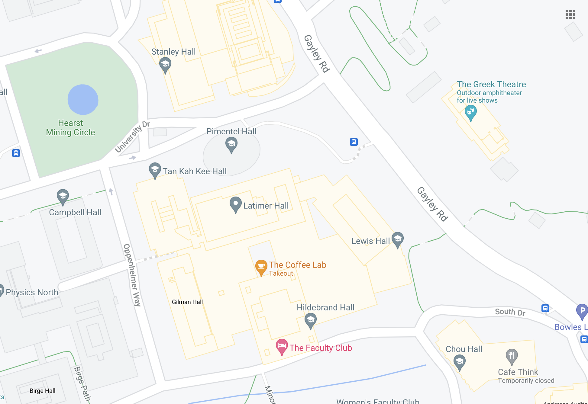

{% load static %}

<!DOCTYPE html>
<html>
<head>
    <meta name="viewport" http-equiv="Content-Type" content="text/html; charset=utf-8;width=device-width; initial-scale=1">
    <title>P4 Drawing</title>

    <link rel="stylesheet" type="text/css" href="{% static 'map/vendor/bootstrap/css/bootstrap.min.css' %}">
    <link rel="stylesheet" href="../../static/map/css/large.css">

    <style type="text/css">
    .box{
          position: relative;
          display: inline-block; /* Make the width of box same as image */
      }
      .box .text{
          position: absolute;
          z-index: 999;
          margin: 0 auto;
          left: 0;
          right: 90%;
          top: 5%; /* Adjust this value to move the positioned div up and down */
          text-align: center;
          width: 60%; /* Set the width of the positioned div */

      }
      .options {
        width: 40em;
        height: 15em;
        background: #c1d3fe;
        margin-left: 17%;
        border-radius: 15px;
        margin-bottom: 0
      }

      .comments {
        margin-left: 2.5%;
      }
    </style>

</head>
<body>
    <!-- You may change the dimensions of this canvas -->
    <!-- <canvas id="myCanvas" width="750px" height="750px"></canvas> -->


    


    <map name="workmap">
      <area shape="rect" coords="200,100,500,200" alt="topright"  href="large_not_ranked_popup.html" onclick="open('GSCCModal');">
    </map>


</body>
<script>
//
// function open(x){
//     $(x).modal('show');
// }


    // variables (common among all displays):
    var water_fountain = {"comment": "", "thumbs_up": 0, "thumbs_down": 0}; // perhaps these should be a separate JS class/object?
    var study_spot = {"comment": "", "thumbs_up": 0, "thumbs_down": 0};
    var restroom = {"comment": "", "thumbs_up": 0, "thumbs_down": 0};
    var ranking = [{"name": "Bob", "rank": 1, "points": 9001}, {"name": "Jim", "rank": 2, "points": 9000}]; // perhaps this should be a separate JS class/object?


    tool.onMouseMove = function(event) {

    }

    socket.onmessage = function(receivedMessage) {

    }

    socket.onclose = function(e) {
        console.error('Chat socket closed unexpectedly');
    };

</script>
</html>
